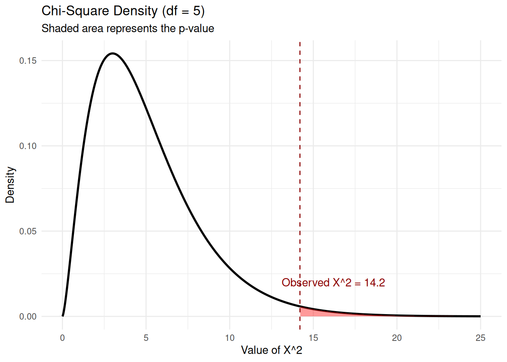

Generalized Likelihood Ratio Test for the Multinomial Model
Introduction
So far, all the hypothesis tests we have considered have dealt with continuous or binary data. Now we want to look at categorical data - for example, we might want to roll a die and see if it is a fair die. A test that would check this is called a goodness of fit test, since we propose a model (a discrete uniform distribution, in this case), and then see if the data fits the proposed distribution.
We could also ask other questions about categorical data: for instance, looking at tables of counts in various categories, are patterns of counts similar across the categories (testing for homogeneity). Or we might ask if there is a relationship between two sets of categories - for example, gender and starting salaries out of college (testing for independence).
In all these tests, we use counts, so we will use the multinomial distribution, and look at likelihood ratio tests for the multinomial distribution.
The Multinomial Model
Recall that in a multinomial model with \(m\) cells and \(n\) independent trials, we let \(X_1, X_2, \ldots, X_m\) be the cell (or category) counts, with observed values \(x_1, \dots, x_m\). The probability of observing \(x_1, \dots, x_m\) is given by: \[
P(X_{1}=x_{1}, \dots, X_{m}=x_{m}) = \frac{n!}{x_{1}! \dots x_{m}!} \prod_{i=1}^{m} p_{i}^{x_{i}},
\tag{1}\] where \(\mathbf{p} = (p_1, p_2, \ldots, p_m)\) is a vector of probabilities that sum to 1, with \(p_k\) being the probability that an outcome of a trial is in cell \(k\), for \(k \in \{1, 2, \ldots, m\}\).
This is therefore the likelihood, and we need to develop a likelihood ratio test for the multinomial distribution, where we are testing the following hypotheses: \[
\begin{align*}
H_0: \mathbf{p} &= \mathbf{p}(\theta), \; \theta \in \omega_0 \\
H_1: \mathbf{p} &\ne \mathbf{p}(\theta) \; \text{(the cell probabilities are free, except that they must sum to 1)}
\end{align*}
\] That is, under the null hypothesis, we have that \(\mathbf{p}=\mathbf{p}(\theta) = (p_1(\theta), p_2(\theta),\ldots, p_m(\theta))\). Therefore, this is a restricted MLE, and is achieved at \(\hat\theta\), the MLE of \(\theta\).
We denote this restricted mle by \(\mathbf{p}(\hat{\theta})=(p_1(\hat{\theta}), p_2(\hat{\theta}), \ldots, p_m(\hat{\theta})\), and now recall that the unrestricted MLE for the multinomial cell probabilities is given by the observed proportions: \(\hat{p_i} = \dfrac{x_i}{n}\).
GLR for the Multinomial Distribution
Putting the above statements together, and using Equation 1, we get the generalized likelihood ratio\(\Lambda\): \[
\Lambda = \frac{\max_{\theta \in \omega_0}
lik(\theta)}{\max_{\theta \in \Omega} lik(\theta)} = \frac{MLE \text{ of } \mathbf{p}\text{ over } \omega_0}{MLE\text{ of } \mathbf{p}\text{ over } \Omega} = \prod_{i=1}^{m} \left( \frac{p_{i}(\hat{\theta})}{\hat{p}_{i}} \right)^{x_{i}}
\]
Taking logs on both sides: \[
\log \Lambda = \displaystyle \sum_{i=1}^m x_i \log \left(\frac{p_i(\hat{\theta})}{\hat{p_i}}\right)
\] Note that \(x_i = n\hat p_i\) is the observed count, and \(np_i(\hat \theta)\) is the expected count under \(H_0\). Using this (multiplying and dividing the quotient in the argument of the log by \(n\)), we can write the likelihood ratio as (multiplying throughout by -2, which flips the quotient on the right): \[
\begin{align*}
-2 \log \Lambda &= 2 \displaystyle \sum_{i=1}^m (n\hat{p_i}) \,\log \left(\frac {n\hat{p_i}}{np_i(\hat{\theta})}\right) \\
&= 2n \displaystyle \sum_{i=1}^m \hat{p_i} \,\log \left(\frac {\hat{p_i}}{p_i(\hat{\theta})}\right) \\
\end{align*}
\] Denoting the observed count by \(O_i\) and the expected count by \(E_i\), we can write: \[
-2 \log \Lambda = 2 \displaystyle \sum_{i=1}^m O_i \,\log \left(\frac {O_i}{E_i}\right)
\]
Degrees of freedom for \(-2\log \Lambda\)
Note that \(O_i = n\hat{p_i}\) and similarly, \(E_i = np_i(\hat{\theta})\).
\(\dim \Omega = m -1\) since the only restriction on the \(m\)-tuple \(\mathbf{p} = (p_1, p_2, \ldots, p_m)\) is that the \(p_k\) need to sum to 1.
Further, \(\dim\omega_0\) is determined by the estimated \(\theta\). If a \(k\)-dimensional \(\theta\) is estimated, then \(\mathrm{dim}\;\omega_0=k\). \(\implies -2 \log \Lambda\) has degrees of freedom \(m-1-k = m-k-1\).
Pearson’s chi-square test
A goodness-of-fit test using a chi-square distribution was developed by Karl Pearson in 1900, who compared observed values to predicted values (under some null assumption, so using expected values under this null assumption). He used a statistic, which we call Pearson’s chi-square statistic (because it turned out to have a chi-square distribution) which is now commonly used to test for goodness of fit. This statistic is denoted by \(X^2\) and is defined to be \[
X^2 = \displaystyle \sum_{i=1}^m\frac{(O_i-E_i)^2}{E_i},
\] where \(O_i\) and \(E_i\) are the observed and expected counts respectively, in the ith cell. It can be shown (and we will show below) that Pearson’s statistic and the likelihood ratio \(-2\log \Lambda\) are asymptotically equivalent under \(H_0\). Pearson’s test (using the statistic \(X^2\)) was more commonly used because it was easier to compute without a computer. You could use whichever statistic is convenient.
Proof of the Asymptotic Equivalence of \(-2\log \Lambda\) and \(X^2\)
To show \(-2 \log \Lambda \approx X^2\), define \(f(x) = x \log\left(\dfrac{x}{x_0}\right)\). We use a Taylor expansion of \(f(x)\) around \(x_0\):
Now, recall that: \[
-2 \log \Lambda = 2n \sum \hat{p}_i \log \left( \frac{\hat{p}_i}{p_i(\hat{\theta})} \right)
\] Substituting \(x = \hat{p}_i\) and \(x_0 = p_i(\hat{\theta})\) into the expression Equation 2, with \(f(x)\) being \(-2\log \Lambda\) , we get: \[
-2 \log \Lambda \approx 2n \sum_{i=1}^{m} \left[ \left(\hat{p}_i - p_i(\hat{\theta})\right)\cdot 1 + \frac{(\hat{p}_i - p_i(\hat{\theta}))^2}{2}\cdot \frac{1}{p_i(\hat{\theta})} \right]
\]
Since \(\displaystyle \sum_{i=1}^m \hat{p}_i = 1\) and \(\displaystyle \sum_{i=1}^m p_i(\hat{\theta}) = 1\), the linear term \(\sum (\hat{p}_i - p_i(\hat{\theta}))\) vanishes. The 2 outside the sum, and the 2 in the second term cancel. This gives us:
Here are a couple of examples of the GLRT for a multinomial distribution. Try to do them before opening up the solutions.
Die Rolls
Roll a die 60 times. The number of times we see the sides with 1, 2, 3, 4, 5, and 6 spots are 4, 6, 17, 16, 8, and 9 respectively. Test if the die is fair.
First make a table with the expected counts, and observed counts, and then use Pearson’s chi-square statistic, finally using 1-pchisq(q, df) to compute your \(p\)-value.
Check your answer
We are testing if a die is fair based on \(n = 60\) rolls. Under the null hypothesis \(H_0\), each side has a probability \(p_i = 1/6\), leading to an expected count of \(E_i = 10\) for each category (note that this implies that under the null, the degrees of freedom \(=0\) since the distribution is completely specified.)
Observed and Expected Frequencies
Category (\(i\))
\(O_i\)
\(E_i\)
\((O_i - E_i)\)
\((O_i - E_i)^2\)
1
4
10
-6
36
2
6
10
-4
16
3
17
10
7
49
4
16
10
6
36
5
8
10
-2
4
6
9
10
-1
1
Sum
60
60
0
142
Now let’s compute Pearson’s Chi-Square Statistic: The test statistic \(X^2\) is calculated by summing the squared differences divided by the expected values:
\[
\begin{align*}
X^2 &= \sum_{i=1}^{6} \frac{(O_i - E_i)^2}{E_i}\\
& = \frac{36}{10} + \frac{16}{10} + \frac{49}{10} + \frac{36}{10} + \frac{4}{10} + \frac{1}{10}\\
&= 3.6 + 1.6 + 4.9 + 3.6 + 0.4 + 0.1 \\
&= 14.2
\end{align*}
\] With \(m = 6\) cells and \(k = 0\) estimated parameters for \(\omega_0\), the degrees of freedom are \(df = 6 - 1 - 0 = 5\), therefore we need to look at the \(\chi^2_5\) density.
Let’s see what this density looks like:
Code
library(ggplot2)# Parametersdeg_fr <-5x_sq <-14.2# Generate density datax_vals <-seq(0, 25, length.out =1000)y_vals <-dchisq(x_vals, df = deg_fr)df_plot <-data.frame(x = x_vals, y = y_vals)ggplot(df_plot, aes(x = x, y = y)) +geom_line(linewidth =1, color ="black") +# Shade area beyond the observed statisticgeom_area(data =subset(df_plot, x >= x_sq), fill ="red", alpha =0.4) +# Add vertical line for the statisticgeom_vline(xintercept = x_sq, linetype ="dashed", color ="darkred") +annotate("text", x = x_sq +2, y =0.02, label =paste("Observed X^2 =", x_sq), color ="darkred") +labs(title ="Chi-Square Density (df = 5)",subtitle ="Shaded area represents the p-value",x ="Value of X^2",y ="Density") +theme_minimal()

Note that the \(p\)-value is 1-pchisq(q, df) = 0.0144 which implies that we should reject the null.
Do we have the right distribution?
A point is selected from the interval \((0, 1]\) by a random process. Suppose the interval is partitioned by the intervals \(A_i =\{x : \displaystyle \frac{i-1}{4} < x \le \frac{i}{4} \}\). The null hypothesis is that \(p_i\), the probability of \(A_i\), is determined by the density function \(2x\) for \(0< x \le 1\). Test, at a significance level of \(0.025\), that the \(p_i\) have values so determined, if the observed frequencies (of landing in \(A_1, A_2, A_3, A_4\)) are 6, 18, 20, and 36 respectively, for 80 draws from the unit interval.
Check your answer
In this example, a point is selected from the interval \((0, 1]\) and partitioned into four sub-intervals \(A_i = \{x : \frac{i-1}{4} < x \le \frac{i}{4} \}\). We test whether the data follows the density \(f(x) = 2x\) using a significance level of \(\alpha = 0.025\).
First, we need to compute the expected counts using the density specified by \(H_0\). (Note that there is nothing to estimate as we are given the density. Consequently, the value of degrees of freedom associated with the numerator (\(\omega_0\)) is 0.)
Under \(H_0\), the probability \(p_i\) is the area under the density function \(f(x) = 2x\) for each interval: \[
p_i = \int_{\frac{i-1}{4}}^{\frac{i}{4}} 2x \, dx = \left[ x^2 \right]_{\frac{i-1}{4}}^{\frac{i}{4}}
\] This gives us:
\(p_1 = P(A_1) = (1/4)^2 - 0^2 = 1/16\)
\(p_2 = P(A_2) = (2/4)^2 - (1/4)^2 = 3/16\)
\(p_3 = P(A_3) = (3/4)^2 - (2/4)^2 = 5/16\)
\(p_4 = P(A_4) = (4/4)^2 - (3/4)^2 = 7/16\)
With \(n = 80\), the expected counts are \(E_i = 80 \cdot p_i\).
Just as in the previous problem, make a table of expected and observed counts:
Category (\(i\))
\(O_i\)
\(p_i\)
\(E_i\)
\((O_i - E_i)\)
\((O_i - E_i)^2\)
\(A_1\)
6
\(1/16\)
5
1
1
\(A_2\)
18
\(3/16\)
15
3
9
\(A_3\)
20
\(5/16\)
25
-5
25
\(A_4\)
36
\(7/16\)
35
1
1
Sum
80
1
80
0
-
Now let’s compute the value of Pearson’s statistic.
With \(m = 4\) cells and \(k = 0\) estimated parameters, \(df = 4 - 1 = 3\).
At \(\alpha = 0.025\), the critical value \(\chi^2_{0.025, 3} =\)qchisq(0.025, 3, lower.tail = FALSE) = 9.3484036. Since \(1.8286 < 9.348\), we fail to reject \(H_0\).
Alternatively we could compute the \(p\)-value and compare it to the given \(\alpha\): 1-pchisq(q, df) = 0.6087.
The following R code draws the \(\chi^2\) density for 3 degrees of freedom and shades the area beyond the observed statistic of 1.8286.
Code
# Parametersdeg_fr <-3x_sq <-1.8286x_lim <-15# Generate density datax_vals <-seq(0, x_lim, length.out =1000)y_vals <-dchisq(x_vals, df = deg_fr)df_plot <-data.frame(x = x_vals, y = y_vals)ggplot(df_plot, aes(x = x, y = y)) +geom_line(linewidth =1, color ="black") +# Shade area beyond the observed statisticgeom_area(data =subset(df_plot, x >= x_sq), fill ="blue", alpha =0.3) +# Add vertical line for the statisticgeom_vline(xintercept = x_sq, linetype ="dashed", color ="darkblue") +annotate("text", x = x_sq +1.5, y =0.1, label =paste("X^2 =", round(x_sq, 4)), color ="darkblue") +labs(title ="Chi-Square Density (df = 3)",subtitle ="Shaded area represents the p-value region",x ="Statistic Value",y ="Density") +theme_minimal()